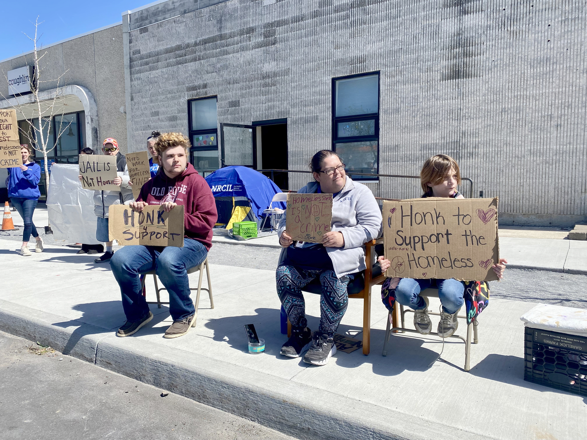
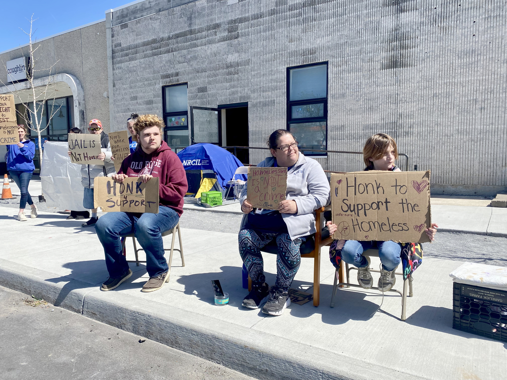

Suicides
Given the conditions that we know increase the likelihood of suicide in the general population, compounding factors faced when experiencing homelessness place those without homes at much higher risk. This fact sheet details common risk factors for suicidal behaviors, mental health and clinical utilization trends of HCH grantees reported in the 2016 Uniform Data System dataset, and circumstantial data reported in the National Violent Death Reporting System.